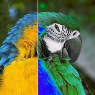

Kanalzuordnung (HSV)

Erstellt Farbton, Sättigung, Wert und Alpha aus anderen Kanälen der Ebene.
Einstellungen
| Einstellung | Typ | Bereich | Standard |
|---|---|---|---|
| H | Auswahl | Farbton, Sättigung, Wert, Alpha, Luminanz, Null, Voll | Farbton |
| S | Auswahl | Farbton, Sättigung, Wert, Alpha, Luminanz, Null, Voll | Sättigung |
| V | Auswahl | Farbton, Sättigung, Hellwert, Alpha, Luminanz, Null, Voll | Hellwert |
| A | Auswahl | Farbton, Sättigung, Hellwert, Alpha, Luminanz, Null, Voll | Alpha |